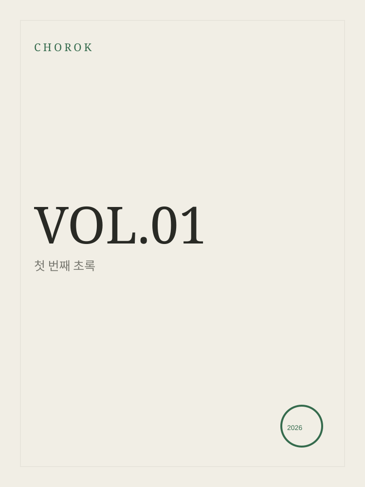

CHOROK MAGAZINE

VOL.01
첫 번째 초록
EDITOR'S NOTE
천천히 바라보기
우리는 너무 많은 것을 빠르게 지나치며 살아갑니다.
이 작은 잡지는 잠시 멈춰서 주변을 바라보기 위해 만들어졌습니다.
특별하지 않은 하루, 익숙한 사람, 오래된 물건과 공간.
그런 것들 속에도 생각보다 많은 이야기가 있다고 믿습니다.
CONTENTS
이번 호
01오래된 의자에 앉아서02천천히 걷는 사람END
다음 페이지에서
이야기는 계속됩니다.